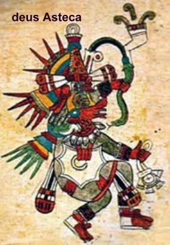
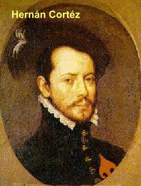
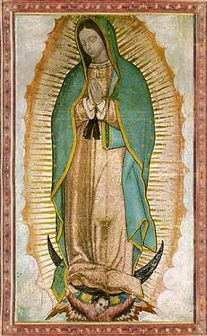

A MÃE DE DEUS INTERCEDE EM FAVOR DOS NECESSITADOS
TRADIÇÃO DO POVO ASTECA
Os povos
que habitavam a América do Norte e Central, antes da conquista européia, tinham
diversas formas de 
Estas sociedades eram organizadas e governadas pela autoridade dos sacerdotes, porque o chefe do Estado era considerado um deus. Por isto, as primeiras cidades se desenvolveram ao redor do templo, e eles, os templos, eram edifícios que tinham funções religiosas e econômicas.
Juan de Bernardino era um índio respeitado e muito querido em sua aldeia asteca de “Cuauhtitlán”, onde também vivia o seu sobrinho Juan Diego, a quem estimava muito e tratava como um verdadeiro filho. Durante as noites de inverno, após as refeições, era hábito dos índios se reunirem ao redor de fogueiras com os mais velhos da comunidade, inclusive com o tio Bernardino, quando recordavam os ensinamentos dos ancestrais que eram narrados com autoridade e descreviam a história da criação.
Contava ele, que nos séculos passados, segundo a crença de seu povo, a “Serpente Emplumada” (tradução do nome “Quetzalcóatl”), era o deus supremo, cheio de amor e bondade, criador de toda a vida que subia da Terra e descia do Céu, tudo tinha origem na sua força e poder, que exercia com misericórdia e piedade. Os homens foram criados por ela, e segundo o antepassado asteca, este deus supremo tinha um “dual”, ou seja, um duplo semelhante a ele. Assim, quando o deus supremo sofreu as represálias e armadilhas do “Senhor da Morte”, inclusive chegando a morrer, o seu “dual” o ressuscitou, e desse modo, a “Serpente Emplumada” assumiu novamente o poder e colocou o “Senhor da Morte” no seu devido lugar (no inferno). E sendo o Supremo deus da Vida, sobre os ossos dos que tinham morrido derramou o seu “próprio sangue” para lhes dar uma vida renovada, nascendo os “macehuales”, que são os homens e mulheres perdoados pela “efusão do sangue” de seu deus supremo.
Por isso, os mais velhos ensinavam que a “Serpente Emplumada”, o deus supremo, tinha morrido e ressuscitado, e derramado o seu sangue sobre o povo, para o bem, propiciando-lhes saúde, disposição, alegria, respeito e promovendo a união com todos.
A única exigência que o deus supremo fazia era o sacrifício de “mariposas” (aquelas borboletas grandes).
Todavia, na continuidade dos séculos, segundo a descrição dos idosos, os astecas passaram a adorar simplesmente o “Sol”, colocando a “Serpente Emplumada” num plano inferior. E também atribuíram à divindade solar outro nome “Hiutzilopochtli” que significa “A Águia que Sobe”, que lhes deu uma vigorosa vocação guerreira.
Para este novo deus eles construíram uma cidade especial em sua honra, a “Cidade do Chefe” (a cidade “Tenochtitlan”). Era o deus todo poderoso, o “Grande Senhor Asteca” que se confundia com o “Sol” (o astro solar).
Em consequência, agora com os destemidos guerreiros astecas, iniciou-se também o tempo dos sacrifícios humanos, com a finalidade de homenagear e prestar culto ao poderoso deus, a fim de conseguir dele todos os benefícios necessários ao bem-estar, e por isso era necessário fazer sacrifícios, especialmente os sacrifícios humanos. O ritual se realizava assim: os chefes e sacerdotes do grande templo conduziam as pessoas ao altar de sacrifícios e ali a matavam e extraíam o coração para ofertar ao deus, e atrair a bondade divina.
CHEGADA DOS CONQUISTADORES ESPANHÓIS

Aqueles primeiros anos de dominação espanhola foram terríveis para os astecas, um povo orgulhoso de suas tradições, agora tinham que acolher as imposições dos conquistadores, para não perderem a própria vida.
OS EVANGELIZADORES FRANCISCANOS
O tempo passou e chegaram os Padres Franciscanos, para catequizar e ensinar aos indígenas a verdadeira religião, tendo o cuidado de não ferir as tradições dos nativos, mas colocando em evidência a grandeza da misericórdia e do Amor de DEUS. Por isso também, os religiosos se esforçavam para apagar aquela imagem grotesca da guerra e da destruição do povo asteca feita pelos guerreiros espanhóis.
Aos poucos as aldeias foram aceitando a evangelização e começaram a compreender muito da doutrina cristã, graças ao cuidado dos franciscanos que aprenderam o idioma asteca “náhuati” para facilitar a catequese.
O índio Juan Diego e sua esposa Maria Lucia foram batizados e receberam seus nomes cristãos, muito embora, em família, quase sempre, eram chamados pelo nome que tinham na tribo: “Cuauhltólmac” (que significa “o que fala como águia”) e sua esposa “Malintzin”.
Por outro lado, os senhores conquistadores que se apossaram das terras e das riquezas dos índios, ambiciosamente queriam sempre mais, exigindo um continuo e exaustivo trabalho dos selvagens, para extrair mais ouro e pedras preciosas. Os Franciscanos não estavam de acordo com o procedimento das autoridades espanholas, mas infelizmente, eles nada podiam fazer para amainar aquela abominável cobiça. O povo sofria e vivia humilhado.
PRIMEIRA APARIÇÃO DE NOSSA SENHORA
Na
madrugada de um sábado do mês de Dezembro de 1531, quando a força do inverno,
com seus dias muito frios, já se 
- “Juantzin! Juan Diegotzin!”
Alguém sabia o seu nome e o chamava! E usava uma expressão carinhosa, revelando afeto, respeito e reverencia, chamando-o daquela maneira: “Juantzin!” O seu coração vibrou de emoção! As pressas foi subindo a colina inundado de expectativa e júbilo. No alto da colina, deparou com uma linda Senhora, que de pé sobre uma pedra, olhava para ele. E pediu para que ele se aproximasse. Juan Diego estava emocionado diante daquela encantadora visão. O seu manto reluzia como o sol, desprendendo suaves raios de luz; a pedra onde estavam os seus pés apresentava o esplendor de uma pedra preciosa; a terra, ao redor, e os pequenos arbustos no meio da neblina matinal refletiam as cores do arco-íris, os cactos e as folhagens tomavam a cor verde da esmeralda, e os troncos dos arbustos e espinhos dos galhos, pareciam fios de ouro. Ele pensou: “Sem dúvida, são as cores da Terra Celestial, as cores da criação”! E logo, respeitosamente, se inclinou diante da Senhora, saudando-a com reverência e afeto filial e escutou a sua encantadora voz, repleta de ternura:
- “Escuta, filho meu o menor, Juantzin, para onde vais”?
(Ela falava da mesma maneira como os índios astecas tinham o hábito de se expressar, ele respondeu):
- “Minha senhora, Menininha minha, vou à Tua Casa Sagrada de México - Tlatelolco, para seguir as coisas de DEUS, que nos ensinam os que são as imagens de NOSSO SENHOR, os nossos novos sacerdotes”!
Juan não tinha dúvidas, Aquela Senhora era a MÃE DE NOSSO SENHOR!
A VIRGEM MARIA continuou falando:
- “Tenha a certeza em teu coração, filho meu o menor, que Eu sou a Perfeita Sempre VIRGEM SANTÍSSIMA MARIA, MÃE do verdadeiro DEUS, por quem se vive, o CRIADOR das pessoas, o SENHOR da proximidade e das mediações, o SENHOR do Céu, da Terra e da comunidade”.
Juan Diego tinha 57 anos de idade e estava admirado que Ela, a VIRGEM SANTA falasse perfeitamente o seu idioma. NOSSA SENHORA continuou dizendo:
- “Juantzin, desejo de todo o coração e quero que aqui seja construída a Minha sagrada casa, Minha casinha. Porque será aqui que mostrarei o Meu FILHO JESUS e o exaltarei para dá-LO a toda gente com o Meu Amor e com o Meu olhar compassivo. Aqui darei o Meu auxílio e Minha proteção. Ajudarei na salvação de todas as pessoas. Porque de verdade, Eu sou a Vossa Mãe compassiva, tua e de todos os “náhuas” os que nesta terra formam uma família, e das demais nações de homens, de todos os que Me amam, dos que clamam por Mim, dos que Me buscam, dos que confiam em Mim. Aqui escutarei todo pranto e toda tristeza, para remediar, consolar e curar todas as dores, todas as misérias e qualquer mal”.
Atentamente Juan Diego ouvia e cheio de admiração pensava: “Ela sabe de todos os nossos padecimentos”! A VIRGEM continuou falando:
- “Juantzin, para concretizar o que deseja o Meu Coração compassivo e o Meu olhar misericordioso, vai ao palácio do Bispo e diga-lhe que Eu te enviei. Diga-lhe que desejo que ele providencie uma casa aqui para Mim. Conta-lhe tudo o que viste, admiraste e escutaste. E que ele, o Bispo, tenha a certeza de que Eu o agradecerei e pagarei. E a ti, Juantzin, também te farei muito feliz. Retribuirei o teu cansaço deste serviço que vais fazer junto ao Bispo a quem te envio”.
A VIRGEM MARIA fez uma pausa e o despediu dizendo, com um sorriso no olhar:
-“Já ouviste, filho Meu o menor, Meu desejo e Minha palavra. Vai, faze agora a tua parte”.
Juan Diego respeitosamente se inclinou e se despediu dizendo:
- “Senhora minha, Menina, já vou realizar Teu admirável desejo, Tua venerável palavra. Por isso Te deixo por ora, eu, Teu pobre indiozinho”!